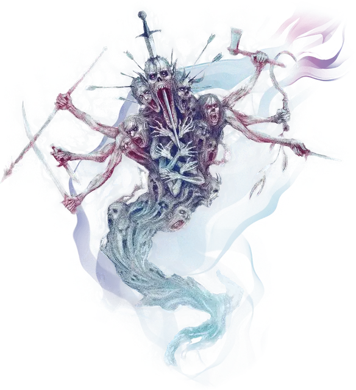

Предвестник гибели
Gallows Speaker
Огромная Нежить, Хаотичная Злая

Класс Защиты 13 Инициатива +3 (13)
Хиты 75 (10к12 + 10)
Скорость 5 футов, Полёта 40 футов (парит)
| мод | спас | ||
|---|---|---|---|
| СИЛ | 9 | −1 | −1 |
| ЛОВ | 16 | +3 | +3 |
| ТЕЛ | 12 | +1 | +1 |
| мод | спас | ||
|---|---|---|---|
| ИНТ | 10 | +0 | +0 |
| МДР | 12 | +1 | +1 |
| ХАР | 19 | +4 | +4 |
Сопротивление урону Дробящий, Колющий, Рубящий, Звук
Иммунитеты Некротический, Яд; Испуганный, Истощение, Окаменевший, Опрокинутый, Опутанный, Отравленный, Очарованный, Парализованный, Схваченный
Чувства пассивное Восприятие 11, Истинное зрение 60 футов
Языки Общий
Опасность 6 (2 300 опыта; БВ +3)
Особенности
Аура жестокости. В конце каждого хода предвестника все существа по его выбору в 15-футовой Эманации, исходящей от него, подвергаются следующему эффекту. Спасбросок Мудрости: Сл 15. Провал: Цель Реакцией совершает рукопашную атаку по существу в пределах досягаемости. Если в пределах досягаемости нет существ, цель получает 7 (2к6) Психического урона.
Вихрящееся тело. Предвестник может входить в пространство других существ и останавливаться там.
Действия
Мультиатака. Предвестник совершает две атаки Кружащими клинками.
Кружащие клинки. Бросок рукопашной или дальнобойной атаки: +6, досягаемость 5 фт. или дистанция 60 фт. Попадание: 13 (3к6 + 3) Рубящего урона плюс 7 (3к4) Некротического урона.
Воющий ветер (Перезарядка 5–6). Спасбросок Телосложения: Сл 15, все существа в 30-футовом Конусе. Провал: 18 (4к8) урона Звуком, и цель Испугана на 1 минуту. Испуганная таким образом цель Оглушена, вынуждена истошно вопить вместе с предвестником и не может сотворять заклинания с Вербальным компонентом. Цель повторяет спасбросок в конце каждого своего хода, оканчивая этот эффект при успехе. Успех: Только половина урона.
Бонус мастерства +3
Среда обитания Болота, Город, Луга, Царство теней
Сокровища Оружейные
Предвестник гибели
Призрак братских могил
Предвестники гибели — это бурлящие водовороты неприкаянных душ. Они восстают на местах массовых трагедий или бессмысленных кровавых битв. Предвестники бесконечно неистовствуют, потрясая оружием и повторяя предсмертные крики тех душ, что составляют их сущность, и заставляют каждого, кто окажется рядом, разделить их страдания и примкнуть к безудержному насилию.